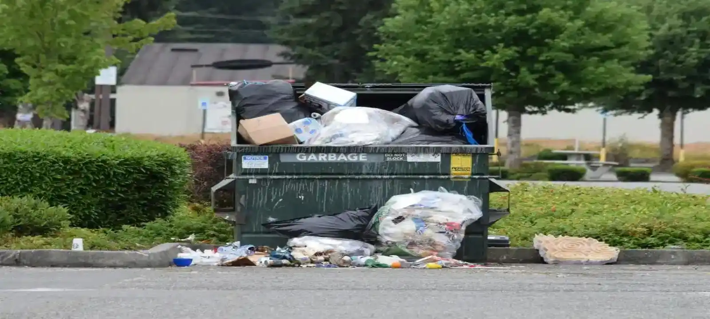
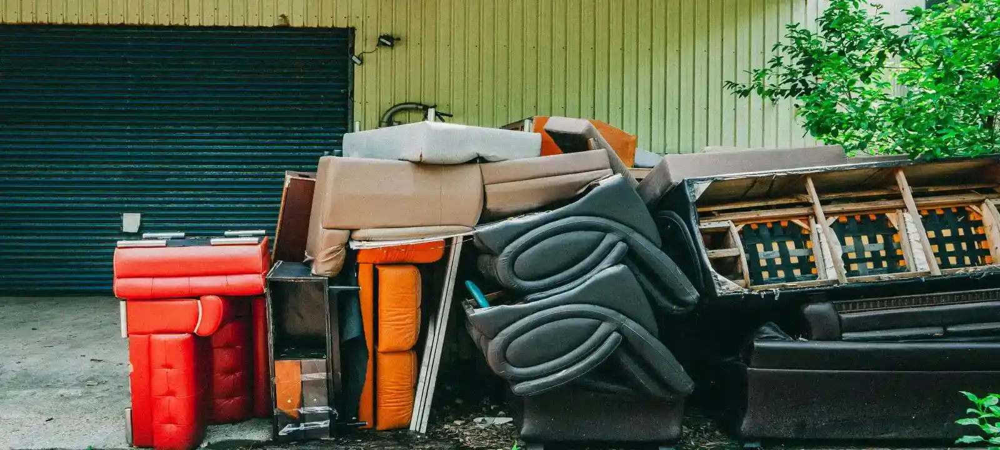

Who We Are
We are a Townsville-based skip bin hire service working with residential, commercial, and construction customers across the local area. Our experience with waste removal projects helps customers choose practical skip bin solutions based on waste type, property access, and project size.
Why Customers Choose Our Skip Bin Hire
Many customers searching for cheapest skip bins Townsville services are trying to avoid paying for oversized bins or unnecessary disposal costs. We help customers compare skip bin sizes and waste types more accurately so they can choose a practical option that fits both their project and budget.
Local Skip Bin Experience Across Townsville
We support customers across Townsville QLD with skip bins for home cleanups, renovation projects, garden waste, commercial rubbish, and light construction debris. Our local experience helps us understand common access conditions, waste volumes, and project requirements across different types of properties.
How We Help Reduce Skip Bin Costs
Choosing the wrong skip bin size is one of the main reasons customers overpay for waste removal. We help customers estimate waste volume more accurately and recommend suitable skip bin options to reduce unnecessary hire and disposal costs where possible.
Cheapest Skip Bin Hire Townsville Services
Cheapest skip bin hire Townsville services are commonly used for home renovations, moving house, garden cleanups, furniture disposal, and construction waste removal. Many customers also compare cheapest skip bins Townsville price list options when looking for a more practical way to manage rubbish without multiple trips to disposal facilities.

Frequently Asked Questions
What affects cheapest skip bin hire Townsville prices?
Skip bin prices usually depend on bin size, waste type, delivery location, and disposal requirements. Green waste bins are generally cheaper than mixed waste or construction waste bins because disposal costs are lower.
How do I choose the right skip bin size?
The correct skip bin size depends on the amount and type of waste your project will produce. Smaller bins are suitable for household cleanups and green waste, while larger bins are more suitable for renovations and construction projects.
Why do customers compare cheapest skip bins Townsville price list options?
Many customers compare cheapest skip bins Townsville price list options to avoid paying for unnecessary bin capacity, incorrect waste categories, or extra disposal fees that do not match the actual project. Pricing can vary depending on bin size, waste type, access conditions, and hire duration, so the cheapest option is not always the most suitable choice. A smaller bin may become overloaded during a renovation or cleanup, while an oversized bin can increase costs without adding real value. We help customers across Townsville compare practical skip bin options based on their actual waste volume and project requirements, making it easier to choose a cost-effective solution without the stress of guessing which bin is right.